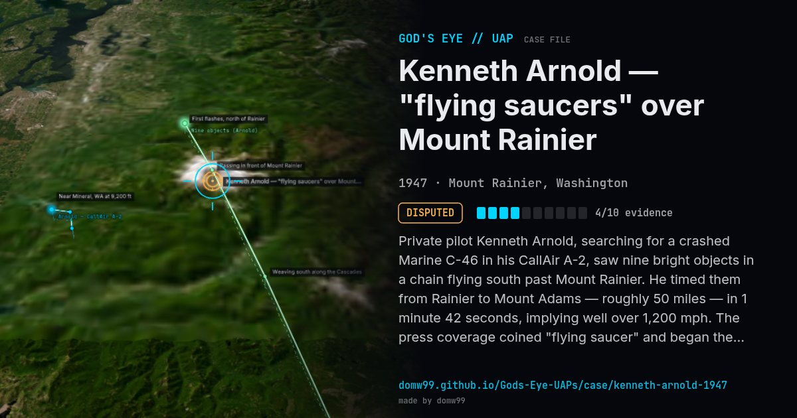

Kenneth Arnold — "flying saucers" over Mount Rainier
DISPUTED

Private pilot Kenneth Arnold, searching for a crashed Marine C-46 in his CallAir A-2, saw nine bright objects in a chain flying south past Mount Rainier. He timed them from Rainier to Mount Adams — roughly 50 miles — in 1 minute 42 seconds, implying well over 1,200 mph. The press coverage coined "flying saucer" and began the modern UFO era.
Explanation
Project Blue Book listed the sighting as a mirage. Other proposals include a fireball, pelicans and reflections; none has been widely accepted.
What was seen
Shape: Nine thin, crescent / convex objects in echelon
Witnesses: 1 pilot (Kenneth Arnold)
Duration: About 2.5 minutes
Browse
- United States
- 1940s
- Disputed
- Aviation encounters
- Official government documents
- Pilot and aircrew witnesses
- Formations and rows of lights